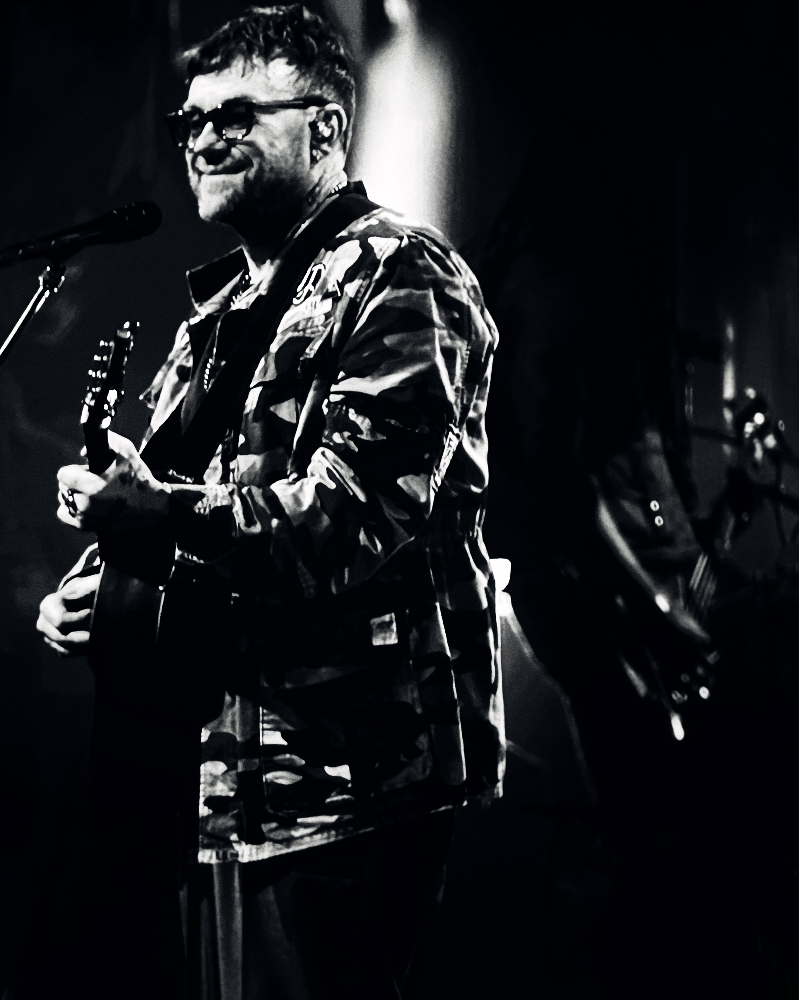
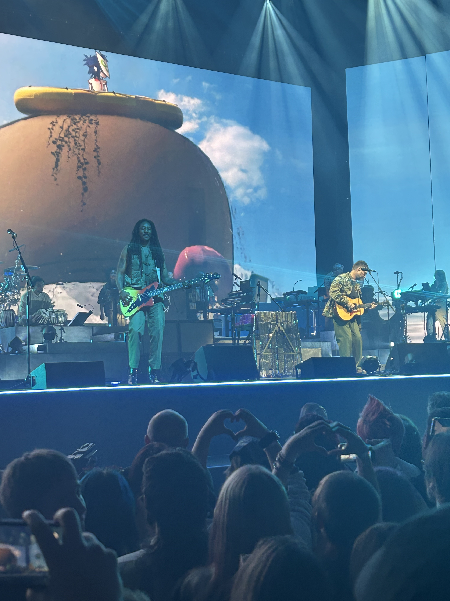
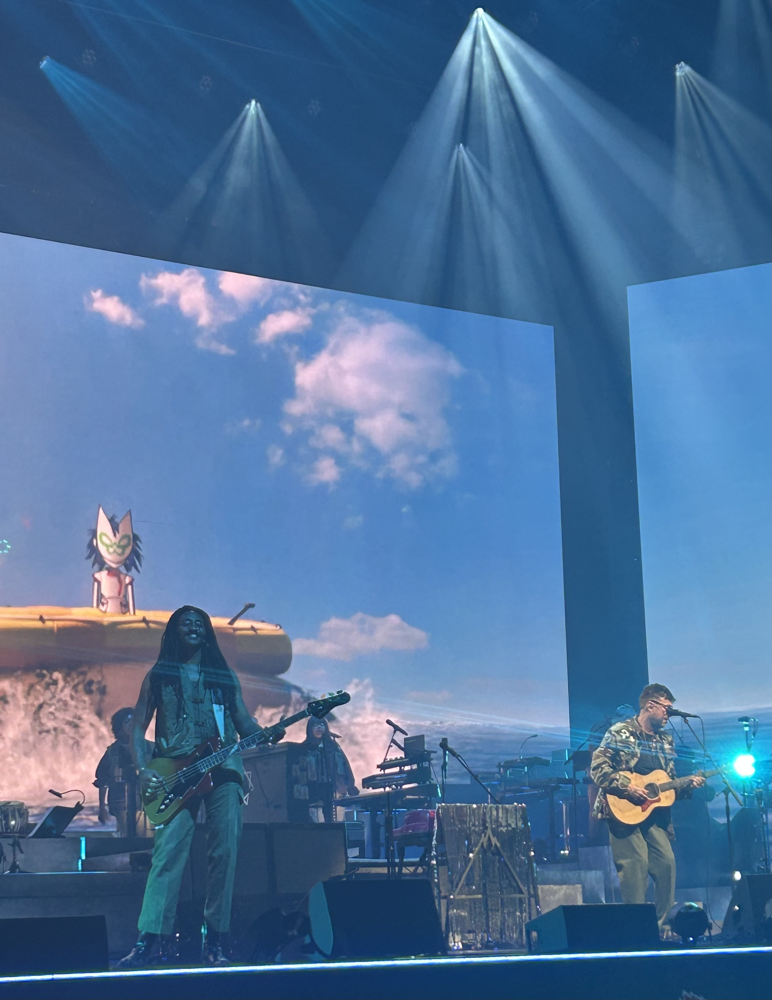
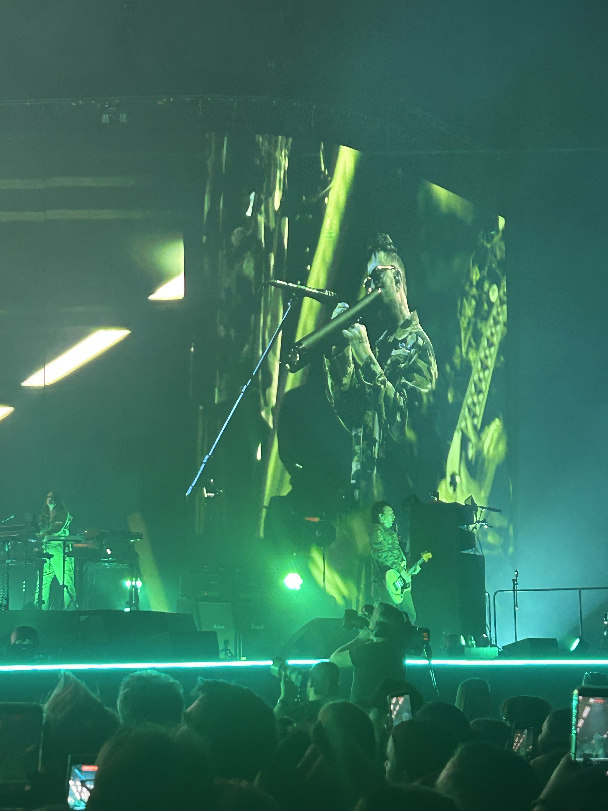
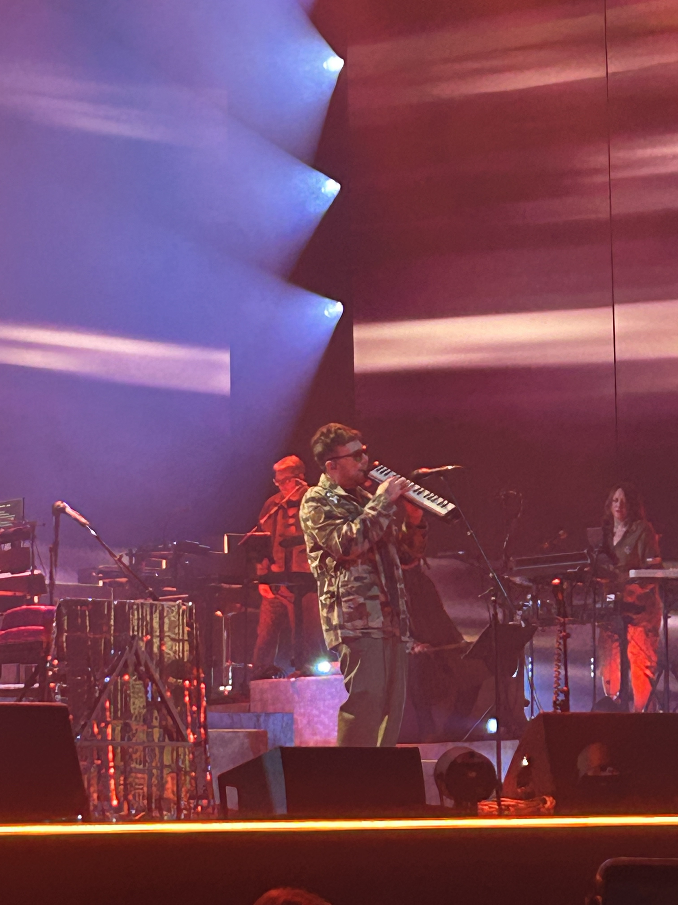
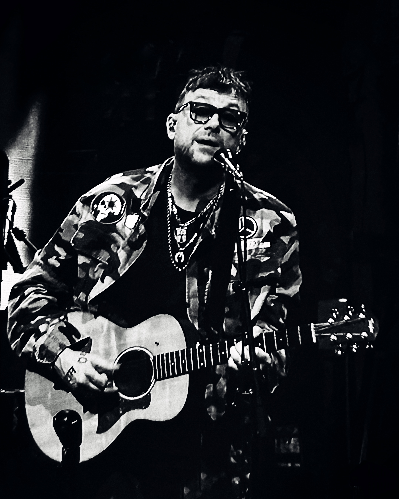
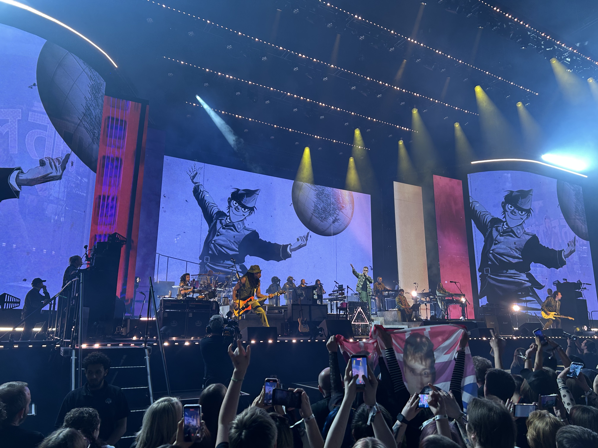
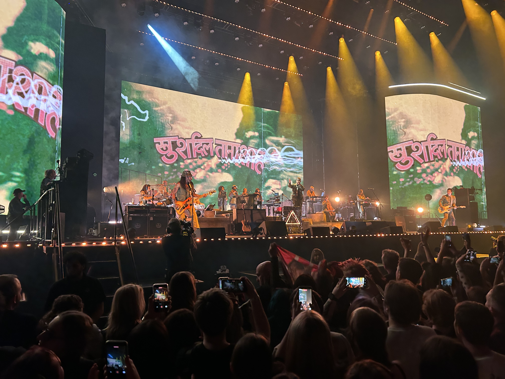
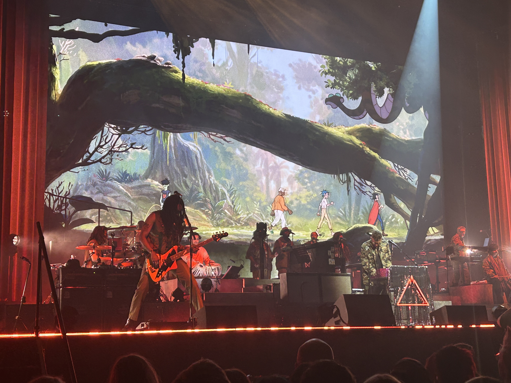
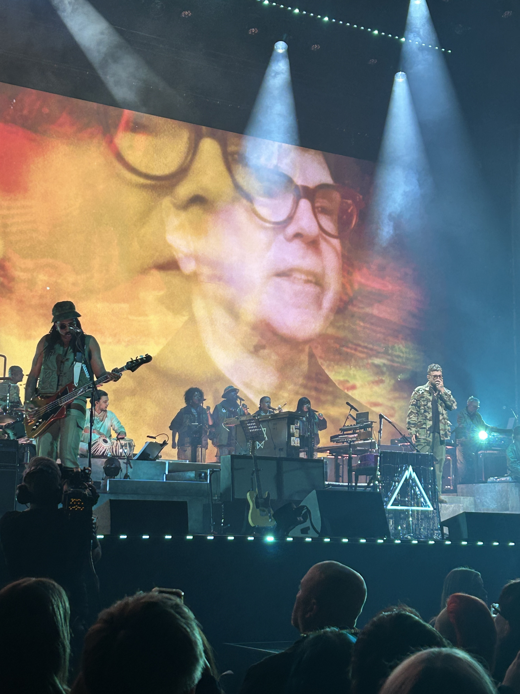

Gorillaz at Manchester's Co-op Live arena
A companion piece about music, generations, and being cheerfully overtaken by your children.

For years I have tended to think of music as something I pass downwards: records, stories, old gigs, half-remembered scenes, and the increasingly elaborate family trees that connect one band to another. But every so often the direction of travel reverses. Your child takes your hand, metaphorically if not literally, and pulls you forward.
That was how it felt seeing Gorillaz with my daughter at Manchester Co-op Live Arena. I was not there as the wise elder explaining the sacred texts. I was there because she had opened a door into a world that was already familiar to her: animation, collaboration, hip-hop, pop, technology, melancholy, humour, and live spectacle all colliding in a way that felt completely natural to her generation.
Damon Albarn has always had a gift for making restless musical curiosity feel human. With Gorillaz, that curiosity becomes a whole universe. It is not just a band in the traditional sense; it is a shifting animated world, a guest list, a set of moods, and a reminder that pop music can be playful and serious at the same time.





The lovely surprise was realising that influence in a family does not only run backwards through old records. Sometimes it arrives beside you, excited, wide-eyed, and pointing at the stage.
Co-op Live is built for scale, and Gorillaz made full use of that scale without losing the oddness that makes them interesting. The screens, the characters, the movement between styles, and the sense of a crowd recognising different entry points into the same music all gave the evening a generous, open feeling.


What I loved most was watching my daughter inhabit it without needing any of my explanations. I could hear echoes of things I already understood: Manchester's long habit of absorbing dance music, indie, electronics and club culture; Albarn's instinct for melody; the way a bass line or a guest vocal can change the temperature of a room. But for her it was not a history lesson. It was simply alive.
Looking back through these photographs, I realised I did not want to crop out the crowd as I normally might. This time, the audience is an important part of the picture. There is something heartening in seeing two generations meet: mine performing on the stage and my daughter's in the crowd, with affection, energy and enjoyment flowing between them.






That is a useful lesson for a parent. We spend so long introducing children to the things that shaped us that it is easy to forget they are busy discovering things that can reshape us in return. I came away grateful not only for the concert, but for the invitation.
Any phone videos from the evening are shared only as personal memories of being there with family. They are not intended as a substitute for the performance, the artists' own releases, or any official live material.
Open the Gorillaz playlist on YouTube.
I still love following wires backwards. But that night in Manchester reminded me that music also lays new wires forwards, into places you would not have reached on your own. Sometimes the best thing you can do is stop explaining, look up, and let your daughter lead.
– Stuart Leach